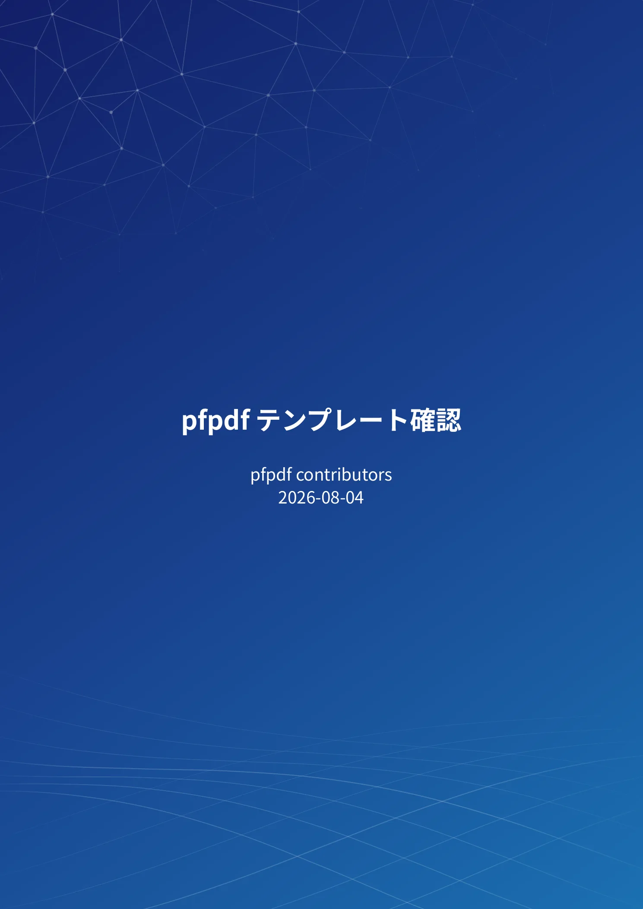

GFM Markdown
表・タスクリスト・取り消し線・自動リンク・ネストしたリストなど、GitHub 標準の記法がそのまま使えます。
日本語組版を第一級でサポート。GFM・数式・コードハイライト・BibTeX・表紙を Vivliostyle と Chromium で組版します。
npx @pfnet-research/pfpdf@latest --input document.md --output document.pdfインストール不要 — npx がそのまま pfpdf を取得して実行します。
---
title: pfpdf テンプレート確認
author: pfpdf contributors
date: 2026-08-04
lang: ja
---
# 1. 文字と段落
これは**「日本語の強調」**です。
数式: $e^{i\pi}+1=0$
表・タスクリスト・取り消し線・自動リンク・ネストしたリストなど、GitHub 標準の記法がそのまま使えます。
`これは**「重要」**です` のように全角記号に隣接した強調も正しく変換されます。
インライン・ディスプレイ数式とコードブロックのハイライトを同梱アセットだけで組版します。
front matter で .bib を指定し、\cite{key} で番号付き引用と参考文献リストを生成します。
論文向けからコード主体まで。ロゴは同梱せず --logo PATH で注入します。
既定で OS フォントに依存しません。ホストフォントの利用は明示的なオプトインです。
同梱 Vivliostyle CLI と標準のブラウザー管理を使い、必要ならブラウザーのパスを明示できます。
macOS・Linux・Windows の4環境で実ブラウザによる PDF 生成を CI で検証しています。
普通の .md ファイルに、必要なら front matter でタイトル・著者・テンプレートを指定します。
インストール不要。ディレクトリを渡すと直下の Markdown を1つの PDF に結合します。
表紙・目次・ページ番号つきの組版済み PDF がそのまま得られます。
ディレクトリの一括変換や、CI でのバージョン固定も可能です:
npx @pfnet-research/pfpdf@latest --input docs --output docs.pdf
npx --yes @pfnet-research/pfpdf@0.1.0 --input docs --output docs.pdf初回実行時に PDF 描画用の Chromium (数百MB) をダウンロードします。以後はキャッシュを使い、同梱機能のみの文書はオフラインでも変換できます。